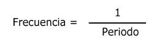
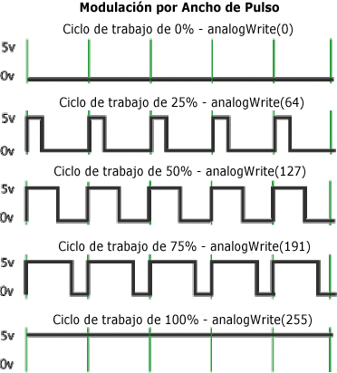

En este tema vamos a ver los fundamentos en los que se basa la generación de salidas analógicas en Arduino.
El procedimiento para generar una señal analógica es el llamado PWM.
Señal PWM (Pulse-Width Modulation) señal de modulación por ancho de pulso.

Donde:
- PW (Pulse Width) o ancho del pulso, representa al ancho (en tiempo) del pulso.
- Periodo del oulso, o ciclo , es el tiempo total que dura la señal.
La frecuencia se define como la cantidad de pulsos (estado on/off)por segundo y su expresión matemática es
la inversa del periodo, como muestra la siguiente ecuación.

El periodo se mide en segundos, de este modo la unidad en la cual se mide la frecuencia (hertz) es la
inversa a la unidad de tiempo (segundos).
Existe otro parámetro asociado o que define a la señal PWM, denominado "Duty cycle" (ciclo de trabajo), el
cual determina el porcentaje de tiempo que el pulso (o voltaje aplicado) está en estado activo (ON) durante
un ciclo.
Por ejemplo, si una señal tiene un periodo de 10 ms y sus pulsos son de ancho (PW) 2ms, dicha señal tiene un
ciclo de trabajo de 20% (20% ON y 80% OFF). El siguiente gráfico muestra tres señales PWM con diferentes
"ciclos de trabajo".

La señal PWM se utiliza como técnica para controlar circuitos analógicos. El periodo y la frecuencia del
tren de pulsos puede determinar la potencia entregada a dicho circuito. Si, por ejemplo, tenemos un voltaje
de 9v y lo modulamos con un ciclo de trabajo del 10%, obtenemos 0.9V de señal analógica de salida.
Las señales PWM son comúnmente usadas para el control de motores DC (si decrementas la frecuencia, la
inercia del motor es más pequeña y el motor se mueve más lentamente), ajustar la intensidad de brillo de un
LED, etc.
En Arduino, la señal de salida PWM (pines 9,10) es una señal de frecuencia constante (30769 Hz) y que sólo
nos permite cambiar el "ciclo de trabajo" o el tiempo que el pulso está activo (ON) o inactivo (OFF),
utilizando la función analogWrite().
Otra forma de generar señales PWM es utilizando la capacidad del microprocesador. La señal de salida
obtenida de un microprocesador es una señal digital de 0 voltios (LOW) y de 5 voltios (HIGH).
Con el siguiente código y con sólo realizar modificaciones en los intervalos de tiempo que el pin
seleccionado tenga valor HIGH o LOW, a través de la función digitalWrite(), generamos la señal PWM.
/* Señal PWM */
int digPin = 10; // Pin digital 10
void setup()
{
pinMode(digPin, OUTPUT); // Pin en modo salida
}
void loop()
{
digitalWrite(digPin, HIGH); // Asigna el valor HIGH al pin
delay(500); // Espera medio segundo
digitalWrite(digPin, LOW); // Asigna el valor LOW al pin
delay(500); // Espera medio segundo
}
El programa pone el pin a HIGH una vez por segundo, la frecuencia que se genera en dicho pin es de 1 pulso
por segundo o 1 Hertz de pulso de frecuencia (periodo de 1 segundo). Cambiando la temporización del
programa, podremos cambiar la frecuencia de la señal.
Por ejemplo, si cambiamos las dos líneas con delay(500) a delay(250), multiplicaremos la frecuencia por dos,
de forma que estamos enviando el doble de la cantidad de pulsos por segundo que antes.